A blog about Clojure, interactive programming, dev tooling and more...
This is (I hope) part of a series of blog posts with some ideas on using FlowStorm, a Clojure omniscient and time travel debugger, to help us reason about Clojure systems.
This first post, is going to be part a FlowStorm overview, and part a tour of the ClojureScript compiler internals, since we are going to be using it as en example of a non trivial system we would like to explore/debug/understand.
Following this post doesn't require any particular knowledge on compilers. Since the compilation unit of most Lisps is a form instead of a file like on most other languages, the core of the ClojureScript compiler can be seen as a program that will take a string representing a Clojure form as input, read it, recursively parse it into a tree of expressions also known as an AST (abstract syntax tree), and then walks down the tree emitting strings containing JavaScript code.
You can think of it like :
(-> "(defn sum [a b] (+ a b))"
read
analyze
emit)
"function sumb(a, b) { return a + b;}"
which is of course an over-simplification, but should be enough for following the post.
If you like, you can follow along by copying and pasting the commands into your terminal. It will not depend on any particular IDE or pre-installed tooling, apart from the Clojure cli and git.
If it is your first encounter with FlowStorm, we call it a debugger, since a lot of it's features are those found on debuggers, but it's capabilities can be used for much more than chasing bugs.
FlowStorm was designed as a tool for visualizing what is happening inside our Clojure programs as they run, during development, and specially designed with interactive programming and immutability in mind.
For people new to Clojure and Lisps in general, interactive programming is about developing a program by interacting with it's running process. This is quite different from the more traditional way of writing programs, which most of the time implies modifying your files, re-compillig everything (hopefully incrementally), running the process, stopping it, then rinse and repeat. Immutability is about our programs dealing mostly with immutable values, instead of references to mutable objects or places in memory.
Interactivity and immutability alone are already quite powerful tools when trying to understand a system, given you can poke at it by calling different functions, inspect the data, modify and recompile specific parts, all without losing your application state or having to deal with long compilation times.
But poking at systems this way, via manual function calling, println (or the more modern tap>), scope capturing, single stepping, etc, works their best when you know most of the system and you are confident that looking at specific points in the execution will be enough to reveal the answers to your questions. So on top of that, FlowStorm provides an easy way of recording and visualizing our programs execution on demand.
OK, enough preamble, lets jump into it.
For working with the ClojureScript compiler we first need it's sources, so lets start by cloning the official repo's master branch :
$ git clone https://github.com/clojure/clojurescript
$ cd clojurescript
We can now setup FlowStorm by the just cloned project deps.edn like this :
{...
:aliases
{...
:storm
{:classpath-overrides {org.clojure/clojure nil} ;; for disabling the official compiler
:extra-deps {com.github.flow-storm/clojure {:mvn/version "1.11.1-11"}
com.github.flow-storm/flow-storm-dbg {:mvn/version "3.8.2"}}
:jvm-opts ["-Dclojure.storm.instrumentEnable=true"
"-Dclojure.storm.instrumentOnlyPrefixes=cljs"
"-Dflowstorm.startRecording=false"
"-Dclojure.server.repl={:port 5555 :accept clojure.core.server/repl}"]}}}
There is quite a lot going on there, luckily we only need to do this once.
We added a new alias, :storm, so we can easily start a repl with everything we need.
The important parts are :
cljs.*FlowStorm can be used with just the official Clojure compiler, but by swapping it by the ClojureStorm dev compiler we get automatic instrumentation, which gives us a much nicer experience for the kind of things we are going to do next.
Now we can finally run a Clojure repl with the :storm alias :
$ clj -A:storm
ClojureStorm 1.11.1-11
Evaluate the :help keyword for more info or :tut/basics for a beginners tour.
As soon as the repl starts, the first thing we will do is to start the FlowStorm UI, which we accomplish by evaluating the :dbg key in this ClojureStorm repl.
user=> :dbg
user=> (require 'cljs.main)
user=> (cljs.main/-main "--repl")
ClojureScript 0.0.249695361
cljs.user=>
Right after, we require the main ClojureScript compiler namespace, and then run the main function with the --repl arg (for people new to Clojure, the ClojureScript compiler is just a function we can invoke from our repl), which tells it to start a browser repl. This should have opened a browser window and replaced our Clojure repl with a ClojureScript one. Everything we type on this new repl will be read, compiled into JavaScript and sent to the browser for execution.
Note: Starting a repl could take some seconds since we are using ClojureScript from source, so it needs to compile all clj files.
And last but not least we will connect another Clojure repl to the same process our compiler is running, by using telnet to connect to the socket repl we started earlier.
$ telnet 127.0.0.1 5555
user=>
And that is all the setup we need, at this point we should have :
When you just start FlowStorm and you still don't have any recordings you see :
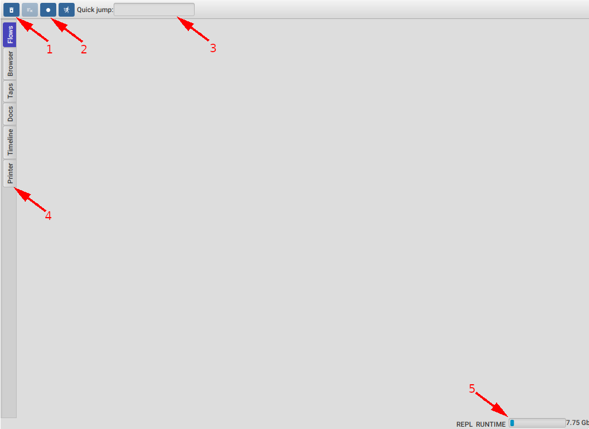
Lets click the Start recording button. You should see the icon changing to a Stop, this is how you can tell you are currently recording.
Now that we are recording, lets go to our ClojureScript repl terminal and eval a simple function, like :
cljs.user=> (defn sum [a b] (+ a b))
After you hit enter it will make ClojureScript read and compile that function, which will generate a bunch of recordings.
Once the function is defined we can safely stop recording, since we now have all the records from a compilation of our function. It is good practice to stop recording when we don't need it since some applications will have threads constantly polling for example, which will waste our heap and pollute our recordings.
As soon as we have recordings, we will see a list of threads on the left appearing.
This means that activity was recorded for those threads. This is already interesting since we get to see that typing that expression on the repl is running code in multiple threads.
Double clicking on a thread will open the thread recordings. We are just going to focus on the main thread since it is where all the compilation happens, but feel free to explore other threads activities.
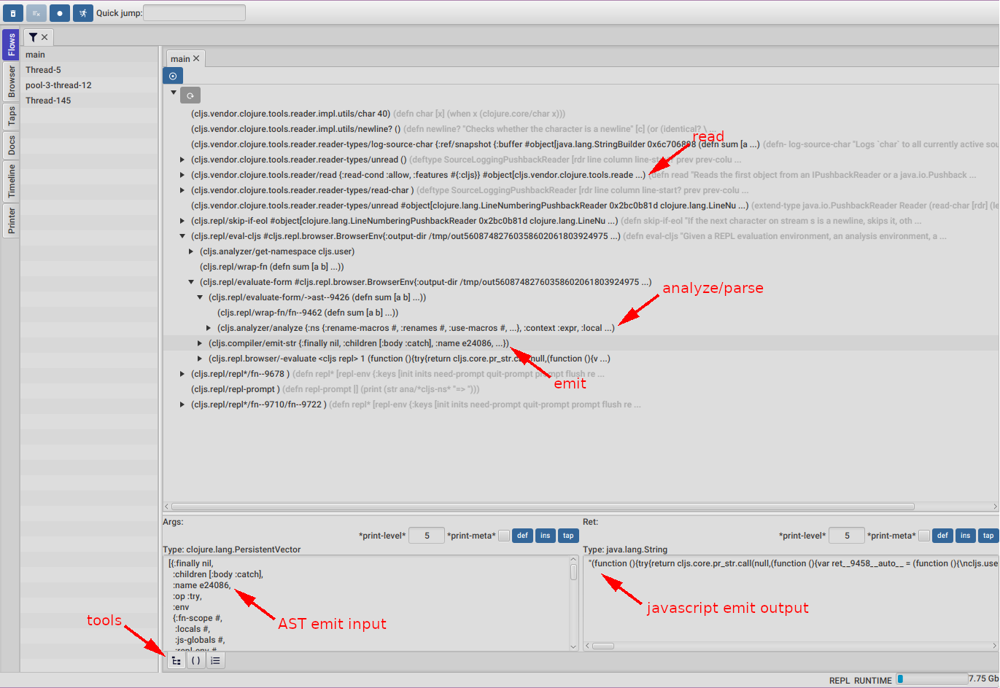
As soon as we open a thread we will be faced with the call tree, an expandable tree of all the functions calls recorded. Time flows from top to bottom. As you can see in the picture above, just by expanding some nodes we already see some familiar functions related to reading, analyzing, macroexpanding, parsing, and emitting. By clicking on the emit-str function we also get to see the input of emit-str which is an AST node, and it's output, which is a string containing Javascript code.
There are also 3 important tools there :
Since this isn't a full FlowStorm tutorial I'll not go into the details of any of this tools. You can find the user guide here for more info.
Now lets look at how we can use FlowStorm to try to understand the different phases of the compilation.
In terms of compilation, the first step made by the ClojureScript compiler is reading.
Read takes a string as the input and outputs a form, which is a nested structure of Clojure lists, vectors, maps, etc, representing the structure on the input string as Clojure data.
ClojureScript accomplish this step by calling clojure.tools.reader/read which is part of the clojure.tools.reader library.
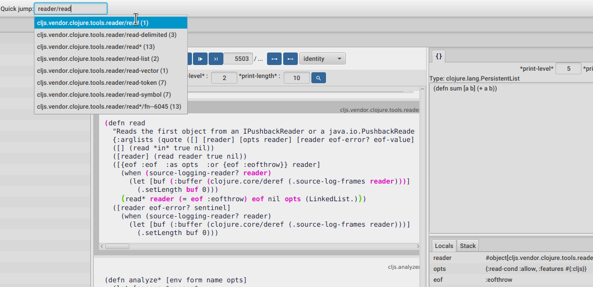
If we want to take a quick look at the read code we can use the Quick jump tool to search for a read function, like in the picture above. After hitting enter or clicking on it, it will move the stepper to the first call of this function. We can tell it was only called once from the number right next to the name.
Now we can step over it using the controls at the top or by clicking around the highlighted expression. Every non highlighted expression means it didn't execute as part of this function frame.
On the right panel we can see the value for the current expression, the one in green.
As we can see from the read source code, it is calling read*. Looking at the read* arguments and return value we can see it goes from a SourceLoggingPushbackReader and some options into a Clojure form. If we want to step into read*, we position the debugger on any expression before the call, and then step next until we jump into it's source code.
Since read* has been called multiple times there is a better way of looking at it.
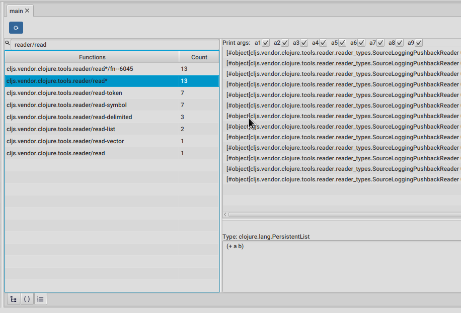
We can move to the functions list tool (the last one of the bottom tabs) and filter the list, so it only shows read functions, like in the picture above.
Double clicking any of them will make the panel on the right list all the calls with their arguments. Single clicking on a call will show the return value in the bottom panel, while double clicking it will take us to step that call.
If you are following along with your own setup, take some time to explore around this read functions.
Now lets move on and explore the analysis of those forms.
Analyze is a recursive process that takes a form as input and produce a tree of AST nodes, which in this case are plain Clojure maps.
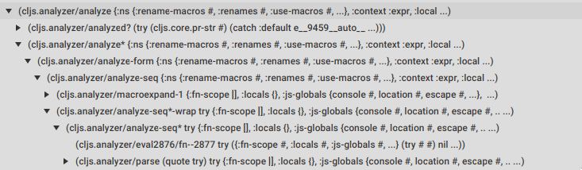
The picture above shows the call tree expansion for the beginning of the analyze call stack, where we can already see how analyze, macroexpand-1 and parse are being called.
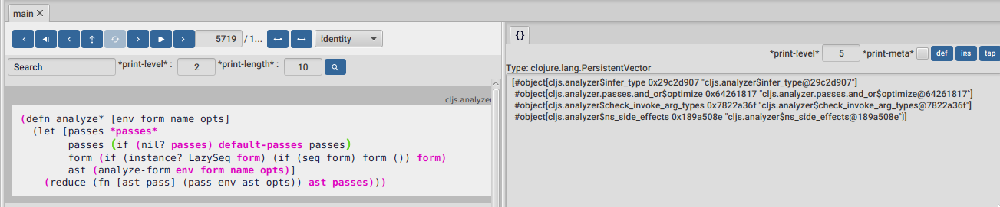
As the analysis process walks down it's input, it will macroexpand, parse and then run several passes on the resulting nodes for things like optimizations, type inference, etc as we can see in the picture above. You can jump into the analyze* function body using the quick jump, in case you want to take a look.
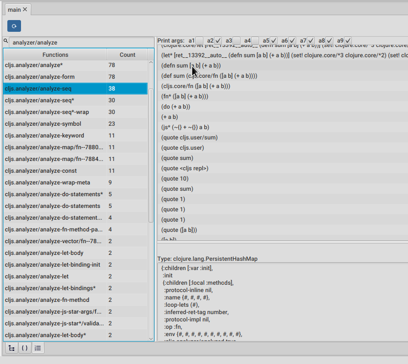
We can take the same approach as we took for the reader, to get a better idea of this analysis functions, by going to the functions list and filter it with analyzer/analyze, like in the picture above.
Lets take a look at analyze-seq. This time we are going to mute arguments 1, 3 and 4 using the checkboxes at the top and just look at the second one, which contains the form to be analyzed.
As we can see on the right, there are calls to analyze-seq on many forms, including the one we typed at the repl.
Clojure developers will notice that the call right after the one we typed is the same expression but after a macroexpand-1 call. This is because analize-seq will also deal with macroexpansion. You can double click on any of this calls to jump into analyze-seq body, and as you will see there, it is in charge of macroexpanding forms, and will also call itself recursively if the macroexpansion macroexpanded anything.
Now lets click on the (defn sum [...] ...) once, the top level expression we typed at the repl.
The panel at the bottom shows the return of analyze-seq, a pretty print of the AST node built by it. Since it is a nested data structure, it is quite inconvenient to look at in pretty print form.
Luckily FlowStorm comes with a data inspector. Lets click on the INS button to open it, which allows us to navigate this nested data structures.
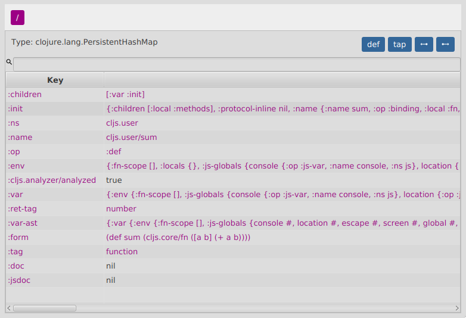
Each AST node contains a :op key as the type discriminator for the node, a :children key with a vector of keys for the sub parts of the node, plus information relevant to each type of node.
We can click around to navigate deeper, and then use the breadcrumbs at the top to navigate backwards.
Even with the inspector, trying to have a sense of the structure of this tree is kind of hard, so lets pull another trick.
We can take any value back to our repl by giving it a name. While having the inspector at the root of our value, click on the DEF button then give it a name, lets say def-op.
Now we can go to our Clojure repl (not the ClojureScript one) and use that value, unless we assigned a namespace to it, it will be defined under user/def-op.
We are going to write a little helper function here to walk down the tree and print the :op with some indentation, which hopefully will help us understand more about the structure of this tree.
(defn print-ast-node
"Recursively print ast-node ops with indentation"
([ast-node] (print-ast-node ast-node 0))
([{:keys [op children] :as ast-node} indent-level]
(println (apply str (repeat (* 2 indent-level) " "))
(str "op: " op))
(doseq [ch-key children]
(let [ch-node (get ast-node ch-key)]
(if (vector? ch-node)
(doseq [ch ch-node]
(print-ast-node ch (inc indent-level)))
(print-ast-node ch-node (inc indent-level)))))))
So we first copy and paste the above function in our Clojure repl.
And now we call it with our def-op node :
user=> (print-ast-node def-op)
op: :def
op: :var
op: :fn
op: :binding
op: :fn-method
op: :binding
op: :binding
op: :do
op: :js
op: :local
op: :local
Nice, this will hopefully help us understand the tree structure better.
Moving forward, if you are following along, lets go back to the inspector and dig into this "def-op" node until we reach the one with :op :js, you will have to dig into [:init :methods 0 :body :ret] by clicking on each key value.
You should now have a map with the :op :js focused on your inspector right pane.
Lets say we want to understand the emission for this particular node.
A trick we could use is, while keeping the inspector open and focused on our value, go to the main FlowStorm window and then :
>| button.What this will do is to search the inspector focused value from the back, and if it finds it, move the stepper to that point in time, which should leave us in the emit code for the AST node we are interested in.
We should be now positioned right before calling (emit* ast) with ast being our node, inside the cljs.compile/emit function.
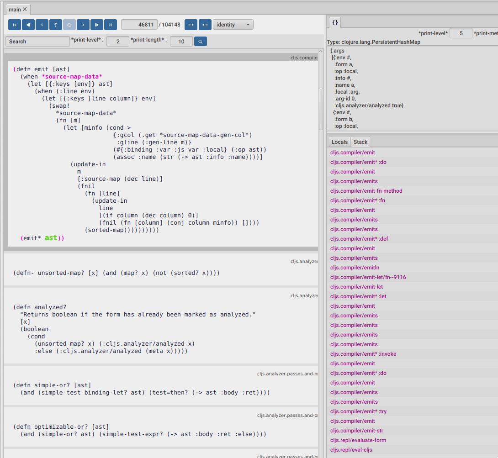
To get some more context and see how we got here, we can look at the current stack on the bottom right panel. It looks like we are in the path of emitting our :def, :fn and :do ast nodes, which make sense.
Same as cljs.analyzer/parse which will create AST nodes based on different Clojure special forms, this cljs.compiler/emit* is also a multimethod, which will emit different Javascript for different AST nodes.
It also looks like we are emitting some other code, something wrapped in a try, which we haven't typed on our repl. Some readers may have noticed this also in previous steps. This is because the ClojureScript compiler is wrapping our code in some extra code, but we will come to that in a minute.
Now stepping forward a couple of times should take us to the emits function, which is the function that will finally emit Javascript, as in write a string.
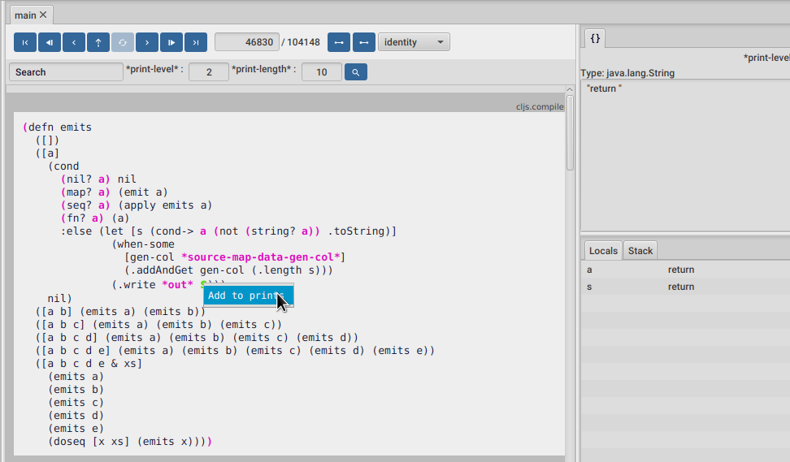
Inspecting the value of s, tells us that for our node, it starts by emitting the return keyword.
We can also see that the ClojureScript compiler emits Javascript code by writing on *out*. Since this is the place that writes Javascript strings, it could be interesting to see what are all the values being written to this *out* along the entire execution, not just this time.
For this we are going to introduce one more tool, the Printer. For inspecting the value of s along the execution we start by right clicking the s expression and then Add to prints. A dialog should popup asking for a message. We can write whatever we want here, this is the kind of messages we always add to our println debugging. We can do this on as many expressions as we want, but this one should be enough for our purpose.
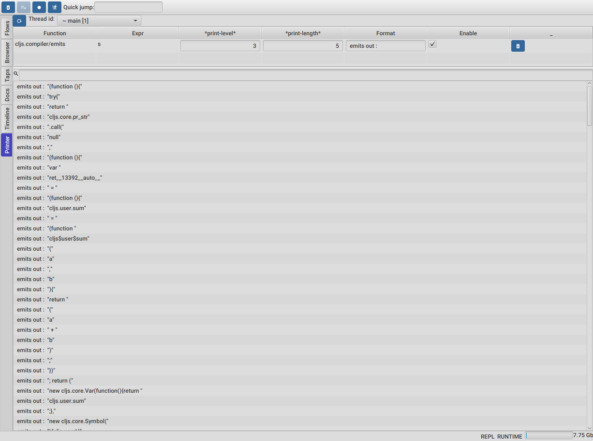
We can find the Printer tool by clicking on the last tab on the left.
At the top we should see a thread selector, and right after it, all our defined printers. For running the printers we need to select a thread, in this case main, and then click the refresh button next to the thread selector.
We should now see all our prints for the entire execution of the main thread, like in the picture above.
We can use the text field at the top to filter our prints if we are searching for any particular emitted Javascript.
If we are interested in any particular print we can double click it, which will take us to the statement and time that generated that print, where we can then use the rest of the tools to keep inspecting.
Go ahead and double click on any of them, so it takes us back on our emits function.
Using the printer we get to see all the single writes to *out* , which is also all the emitted Javascript, but it could also be interesting to see it a little nicer, so we can copy and paste it into our editor for example.
We can use the fact that *out* is bounded to the same mutable value (a StringWriter), the whole time, which means that whatever reference we get to it contains the final state, the one it took after the execution.
Most of the time this is not what we want, and FlowStorm provides a way for dealing with mutable objects, if you are interested take a look here.
But in this case we are going to take advantage of it, and just give this StringWriter reference a name, so we can take it to our repl, the same we did before for our def-node. So we click on the *out* expression and then on the DEF button at the right panel, lets call it out
Now lets go to our Clojure repl where we can print a string representation of it.
user=> (println (.toString out))
(function() {
try {
return cljs.core.pr_str.call(null, (function() {
var ret__13392__auto__ = (function() {
cljs.user.sum = (function cljs$user$sum(a, b) {
return (a + b);
});
return (
new cljs.core.Var(function() {
return cljs.user.sum;
}, new cljs.core.Symbol("cljs.user", "sum", "cljs.user/sum", 1580982348, null), cljs.core.PersistentHashMap.fromArrays([new cljs.core.Keyword(null, "ns", "ns", 441598760), new cljs.core.Keyword(null, "name", "name", 1843675177), new cljs.core.Keyword(null, "file", "file", -1269645878), new cljs.core.Keyword(null, "end-column", "end-column", 1425389514), new cljs.core.Keyword(null, "source", "source", -433931539), new cljs.core.Keyword(null, "column", "column", 2078222095), new cljs.core.Keyword(null, "line", "line", 212345235), new cljs.core.Keyword(null, "end-line", "end-line", 1837326455), new cljs.core.Keyword(null, "arglists", "arglists", 1661989754), new cljs.core.Keyword(null, "doc", "doc", 1913296891), new cljs.core.Keyword(null, "test", "test", 577538877)], [new cljs.core.Symbol(null, "cljs.user", "cljs.user", 877795071, null), new cljs.core.Symbol(null, "sum", "sum", 1777518341, null), "<cljs repl>", 10, "sum", 1, 1, 1, cljs.core.list(new cljs.core.PersistentVector(null, 2, 5, cljs.core.PersistentVector.EMPTY_NODE, [new cljs.core.Symbol(null, "a", "a", -482876059, null), new cljs.core.Symbol(null, "b", "b", -1172211299, null)], null)), null, (cljs.core.truth_(cljs.user.sum) ? cljs.user.sum.cljs$lang$test : null)])));
})();
(cljs.core._STAR_3 = cljs.core._STAR_2);
(cljs.core._STAR_2 = cljs.core._STAR_1);
(cljs.core._STAR_1 = ret__13392__auto__);
return ret__13392__auto__;
})());
} catch (e24083) {
var e__13393__auto__ = e24083;
(cljs.core._STAR_e = e__13393__auto__);
throw e__13393__auto__;
}
})()
And there we have it, a quick way of looking at the entire form generated Javascript. Note that it is the full form that was sent to the browser, not just what we typed on the repl. It contains our sum function definition but also wrapped in some extra code. This extra code prints the result and also sets up ClojureScript repl *1, *2 and *3 vars and in case of an exception also *e.
Another way to look at the final string is to jump to the emit-str function using the Quick jump. That function should be called only once to generate the final string.
We are reaching the end of the post, so wrapping up, we saw a bunch of techniques we can use to debug and understand the ClojureScript compiler. If we are developing it, this gives us a nice workflow :
All this steps should be pretty fast, since we are re-evaluating just what we changed on the ClojureScript compiler, and also compiling and recording one form at a time.
Also all the techniques described here are by no mean special to compiler development, they can be used on any Clojure application.
And that is it, I hope you had a fun reading, find it interesting or learned something.
Until the next time! Happy hacking!
Published: 2023-10-19
Tagged: clojure compilers debuggers debugging flow-storm FlowStorm clojurescript